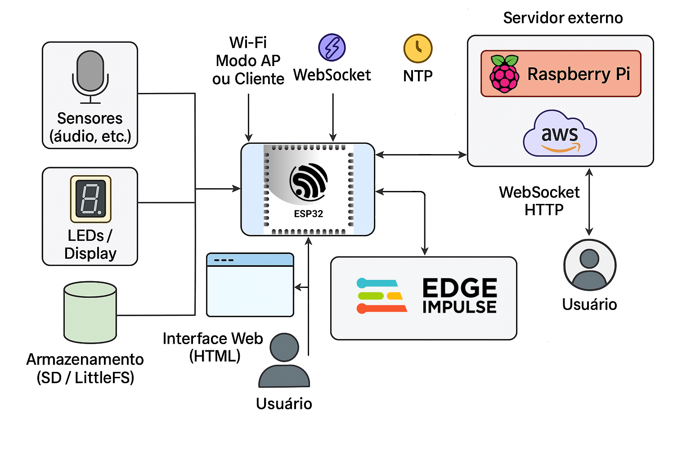

ü߆ Artificial Intelligence in Microcontrollers
Discover the power of microcontrollers with my advanced sound detection system, designed with ESP32 and Arduino Nano BLE Sense. This intelligent device was created to enhance school or home monitoring, detecting sounds like children's voices, adults, and everyday noises.
üîó Innovative Design
The system combines the ESP32 with an Arduino Nano BLE Sense, interconnected via SPI communication, forming a robust and efficient architecture for sound detection.
üñ•Ô∏è Dynamic Display and Storage
- 2.8" TFT ILI9341 screen for live viewing
- SD card slot with event logs
- Internet time synchronization for accuracy
ü߆ Intelligent Detection with Edge Impulse
The machine learning model trained with Edge Impulse recognizes specific sounds such as human voices, dog barks, and other common noises. Ideal for smart environments and inclusive monitoring.
üñ±Ô∏è Touch Interface and Web Integration
- Intuitive touch interface
- Web server for remote access to logs
- TFT screen calibration tutorial included
üéØ Customization and Usability
Detected sounds can be categorized into custom groups such as Classrooms, Homes, Streets, and Others, allowing flexibility in monitoring.
üîç Main System Features
- Real-time monitoring with screen update and CSV logging
- Internet connectivity for precise event dating
- Timing algorithms to minimize false positives
- Flexible categorization according to user needs
üìä System Diagram
Visualization of the neural architecture with Edge Impulse:
